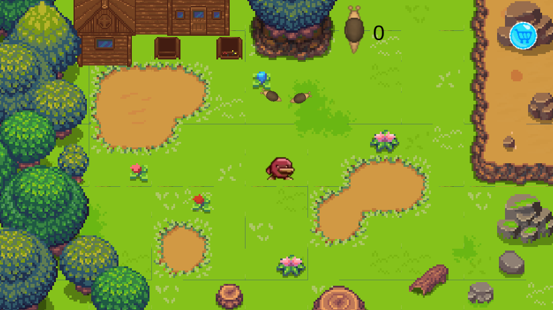

This game is about a garden full of snails. You have to guide the snails to the cages by chasing them. You earn a point by every snail you have sent to the cages. With the points you can buy upgrades in the shop.


I made this game with a classmate. It was real teamwork, and we enjoyed it very much. We learned from each other. I learned to pay more attention to an attractive environment. My contribution was creating the snails and the movement of the snails. I also created the background of the shop model and the model buttons. I also helped to find solutions for bugs in the code, because of that the shop model can be hided and the buttons will be deactivated after closing the shop.